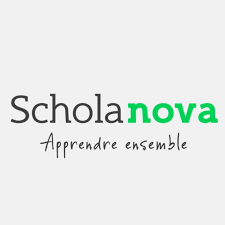
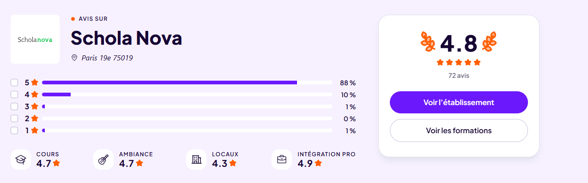

Établissement : Schola Nova, PARIS
Au sein de cette école spécialisée dans l'apprentissage, je prépare un BTS
Services Informatiques aux Organisations, option Services informatiques aux Organisations.
Le programme pédagogique de mon école m'apporte les bases théoriques nécessaires pour intervenir efficacement en entreprise. Cette complémentarité me permet de mobiliser mes acquis académiques, notamment en administration réseaux et en gestion de parc, pour répondre concrètement aux problématiques en entreprise.

J'ai étudié 2 ans à Schola Nova en alternance avec un rythme hebdomadaire de cinq jours en entreprise et cinq jours à l'école. J'ai choisi cette école pour sa réputation et son accompagnement des étudiants, que ce soit au niveau scolaire ou pour aider à trouver une entreprise si besoin. l'école active depuis maitnenant 12 ans l'école accompagneme chaque étudiant déterminer a réussir, l'equipe pédagogique est toujours a disposition pour aider les étudiants, voici la note de l'école d'apres le site Diplomeo
